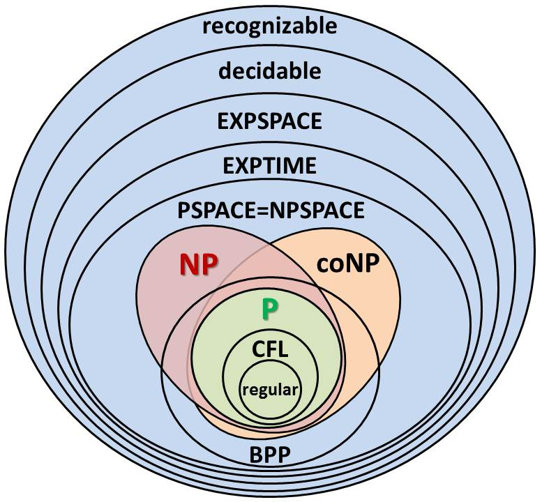

Combinatorial Game Theory ist the mathematics of games without hidden information or chance.
Computational Complexity is a concept from computer science used to meausre how "complex a game is".Soem games can be solved by a computer in P or polynomial time. While other games might be in NP or "Non determinstic polynomial time" these games are often have easy solutions to check but are in generaly very hard to solver. Other games like chess are much harder to compleetly solve computationaly and are in the larger NP-hard or EXPTime circles.
A combinatorial game can be classified in many different ways. A common distinction between cominatorial games is whether they are impartial. An impartial combinatorial game is a combinatorial game where the players are not dsicriminated ie say if chess didn;t have black or white peices.
| Month | Savings |
|---|---|
| January | $100 |
| February | $80 |